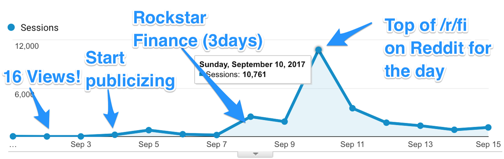

Launching something you've put a lot of time into never stops being scary. After 6 weeks working on it, I recently launched something new on my blog Minafi titled An Interactive Guide to Early Retirement and Financial Independence. While build, writing and marketing this guide I've learned a lot.
The launch for this guide went far better than I ever would have imagined. Tweets and links started building, and within a week the it hit 10,000 views, when just a week before my entire site was receiving barely 10 views a week. Here's what worked for me.
You may already be aware of the top sites in your niche, but what about the top posts? Start by making a list of these sites and looking at the content they feature. What posts are cornerstone in your market?
To understand the which posts people are linking to, you can use an analysis tool like ahrefs, or do a Google search of people linking to the URL.
link:https://minafi.com/interactive-guide-early-retirement-financial-independence/If you start a list of these posts, it'll become clear where people are linking to.
Almost without fail these posts will be very beginner in their focus. Although you may have many experts currently reading your content, imagine how many more beginners there are out there that you could onboard. Beginner content is a great place to start.
The above posts you identified are only there because a lot of people got value from them. Trying to create even more value isn't going to be an easy task. Here are some ideas on ways to make the content 10x better.
How can you structure your content to relate to an even wider audience? The total addressable market of beginners wanting to become experts is larger than the experts community. If you're going for total reach, think about the beginners
Even if you're not a designer, what visuals can you bring in that add value to your readers? These could be graphs, flow charts, screenshots, tables of information or visual representations of your ideas.
If you have a knack for it, creating interactive elements using JavaScript can make content memorable in unqiue ways. This was the approach I tried using some off the shelf JavaScript libraries and entirely too much time. Here's a quick example of what this can look like.
For my interactive post, I decided to go this route and put together an interactive calculator. Here's a sample of some of the interactions used in the post.
Even if you're not a developer, there are over 400 easily embeddable providers that make creating interactivity easier through Embedly. For example - interactive charts from Airtable, interactive quizes from Qzzr or interactive maps from Google Maps.
Using data in a post, in the form of research results is great way to communicate a point. If you can find other case studies and reference them, you can highlight to your readers what the most important facts are without them needing to be experts on the subject.
Maybe one of the top posts in your niche is amazing, but dated. If you can bring the content up to date, it could appeal to a new audience that is not connecting with the existing style.
Once you have a topic and a plan on how you can improve it, the next step is the hardest - creating something amazing. To do that takes considerably more time than a usual post, or a usual product.
If you usually spend a day or two on a piece of content, what could you create if you worked for a month on something? Focus on removing the time limitation and instead focusing on creating something that solves a problem for your audience.
Not every post needs to have this level of detail – nor should it. Some posts serve as reminders or introductions to topics, others serve as cornerstone content. It's these cornerstone pieces that are worth the additional effort to produce something memorable.
Most content is written from a single voice. What if you structure your content as the collective intelligence of the community? By infusing your content with additional voices, you add the credibility of your content while keeping it interesting.
Involving others not only makes for better content, it allows you a chance to get to know others in your niche. These relationships can pay off in unexpected ways down the line. If you're creating something that offers them value as well, they'll be more likely to share your content with their audience.
Reaching out to others is a lot of work. For the launch of the interactive guide, I ended up reaching out to over 100 people – each with a custom message targeted to them. Sometimes I only reached out to one or two people in a night, while other days I posted on a forum and was able to connect with a dozen people at once.
Keep a running email list of everyone you've collaborated with. It'll come in handy later.
Rather than trying to get your post perfect, try iterating on it. For my interactive guide, I started with an outline, and then turned that into a draft of each section, then a draft of the entire post.
By splitting the post into sections, I was able to set daily goals – write draft of section 2, write draft of section 3, create draft of visual assets for section 4, etc. Trying to tackle all of these pieces at once is daunting, but splitting up the work to an hour a day (or as much time as you want to spend) helps motivation.
For this piece of content, you'll want to read over dozens of times. This isn't only to catch spelling and grammer errors, but to make sure you're solving reader problems and connecting with them in the way you set out to.
Read over it with your audience in mind. Read over it with your desired audience in mind. Read over it with a person you want to share it with in mind. Read over with a mentor in mind. Read over it with someone you respect in mind.
After each time you read through, make edits to better target that audience.
On you're ready to launch, it's time to share it! By keeping track of everyone you've collaborated with, this step should be an easy one. You can use Yet Another Mail Merge with Google Sheets to automate sending these emails.
A great book about creating longlasting content is Ryan Holiday's Perennial Seller. Holiday focuses on techniques used by authors and other creatives to create enduring successes. When creating something you're going to spend a create deal of time on, being in this mindset helped me not rush the process. Is it better to launch something 2 weeks sooner, or launch something people will remember for 2 years longer?
One core idea from Perennial Seller that really stuck with me is to spend as long promoting your creation as you spend creating it. I tend to release things and hope for the best, but this advice helped focus on a glaring gap in my strategy. Even if you've built something that people want to read, if you don't get the word out people won't know about it!
For me this meant reaching out contributors, searching for people who linked to the top post I was targeting to make 10x better and connect with them, find places to guest post and share my launch story, and reach out to podcasts in my niche.
Promoting without appearing spammy takes work, but if you have created something you are truely proud of you'll be a lot less likely to second guess your yourself. If you know your work can help people, you don't need to put on a false facade.
I wish I could write as an expert in this area, but it's one I'm curious to get your thoughts on. That's a question I leave for you: How would you promote something you've invested weeks or months of time in?